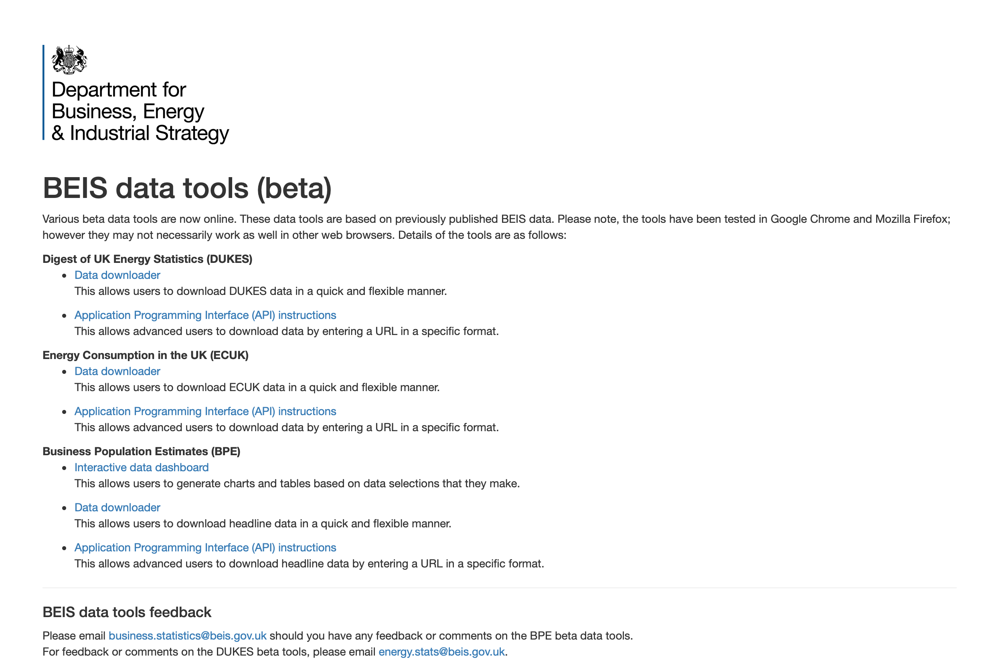
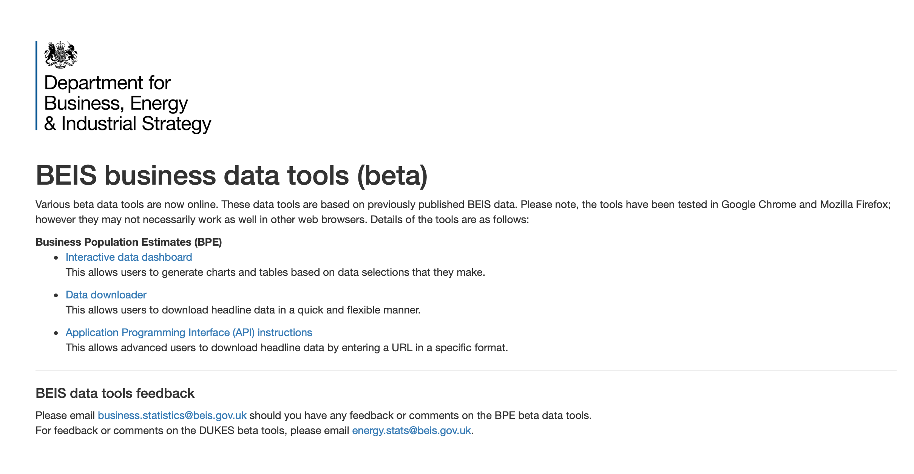

There are several custom built user interfaces. Where appropriate, they are fully or partially auto-generated from data that comes from the API. Some of the API calls used to get this data are documented in Using the API to get data.
Landing pages
The landing pages are unusual in that they are based on a template and data held in the qs_specifications_all.json file.
The home page contains links to all the data sets. As it is possible for the user to enter a partial URL consisting such as /energy/ or /business/, these situations must be anticipated and responded to.
In these case, a partial landing page is generated consisting only of material relevant to that sub-section.
If the user has requested a non-exisitent landing page, rather than generate a 404 error, instead the main landing page content is displayed.
Main landing page/home page

Business section landing page
The main title is updated to reflect the subject matter and only relevent content is displayed 
Creating, configuring and editing landing pages
The landing pages are controlled by the "html": {} section of the qs_specifications_all.json file.